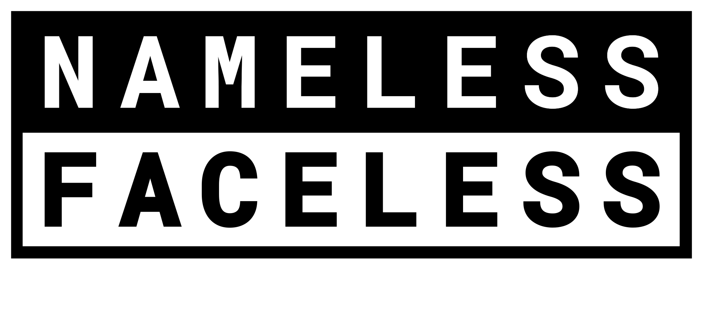
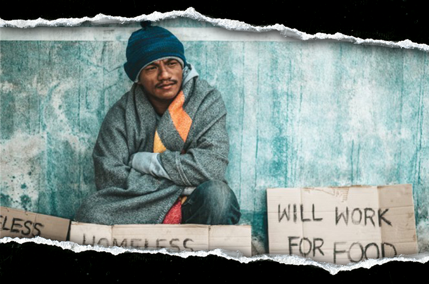
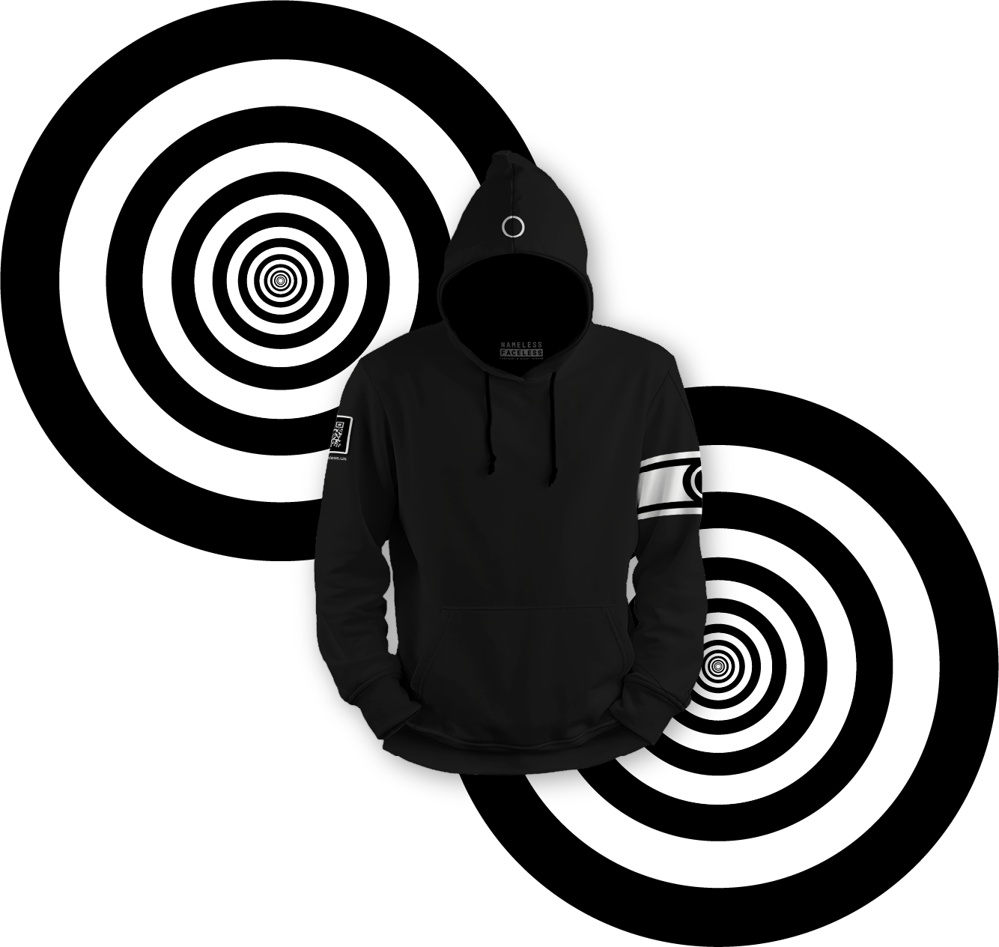
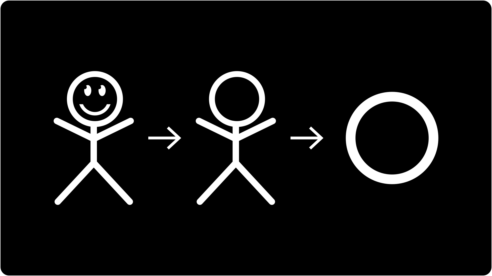
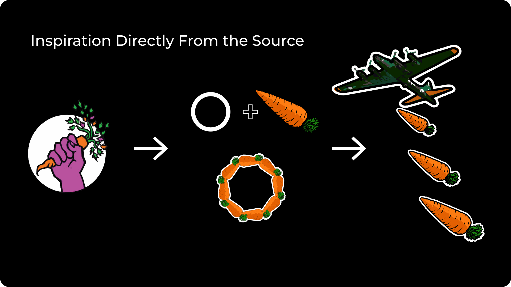
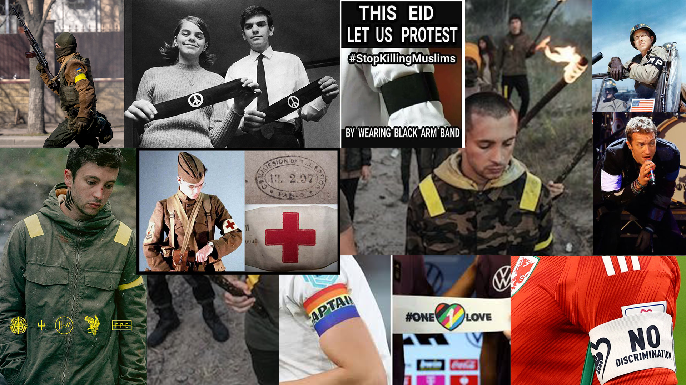

NAMELESS FACELESS
Josh Story

Nameless Faceless is a clothing brand that supports nonprofits by contributing sales directly to their funding efforts.
Associated Taglines
Purpose in Every Thread
Wear the Cause. Be the Change.

Nonprofit organizations are fighting on the front-lines of today's most pressing social, environmental, and humanitarian challenges. Yet too many remain unseen—struggling to gain visibility, connect with younger generations, and secure the funding and resources they need to survive. A generation ready to rise up is left searching for ways to make their voices count, but often don't know where to begin. As governmental sources of aid continue to dwindle and vanish, this growing gap threatens to silence the impact of these organizations—at a time when nonprofit support is perhaps more crucial than at any prior point in our nation's history.
What does this mean for nonprofits and communities?
“In the first months of 2025, America's safety net began to fray. From food banks to community health programs, thousands of nonprofits found their government funding delayed, frozen or stripped away.
The Urban Institute's October report “How Government Funding Disruptions Affected Nonprofits in Early 2025” reveals how the country's moral infrastructure is buckling under the weight of political choices and bureaucratic neglect.
The report found that one in three nonprofits experienced some form of government funding disruption between January and June: 21% lost at least some government funding; 27% saw funds delayed or frozen; and 6% received stop-work orders that halted programs entirely. These numbers, the researchers wrote, reveal a “cascading effect” across the nation's nonprofit landscape.
Federal agencies began canceling grants and pulling back committed funds at the start of the year.” 1
Why nonprofit organizations are bincreasingly important.
“Republican proposals that Congress might consider this year could take away income assistance and services from families with the lowest incomes, children with disabilities, and other vulnerable people, making their lives even harder. A range of proposals, including a menu of spending cuts that House Republicans are reportedly considering, would weaken or even eliminate programs that serve these individuals and families.” 2
Nonprofit organizations that provide services to these populations would likely see increased demand for their services, at a time when government support for their work could be reduced or eliminated entirely.

Nameless Faceless exists to bridge creativity and impact — funding and amplifying organizations already hard at work to build a better future. Clothing is a tangible vehicle that can be utilized to both build funding and community.
Through purposeful design and authentic community connection, we meet our audience where they gather: online, at pop-ups, rallies, protests, concerts, and cultural events. We don't just sell clothing; we strive to create a culture based on peace, unity, and understanding. A strong clothing brand can easily be used as a tool to engage new audiences, create awareness, and help some find a starting place to help out while simultaneously and continually helping fund the efforts of nonprofits and promoting a change in political climate that could realistically eliminate the need for many of the organizations that bear the burden for those left behind by their governing bodies.
Every part of every piece of clothing serves a purpose. Armbands signal unity in purpose and promote a sense of belonging. QR codes connect wearers directly to the causes that they choose to stand for. Fashion becomes activism, community becomes movement, and movement becomes a solution.
I believe in integrity over opportunism. The goal is never to profit from pain — but to stand beside those doing the real work involved in facilitating change.
Process | Initial Ideation
The early stages of my process for this project are difficult to represent in presentation format. The idea for this brand is not necessarily something that I can claim, but I didn't steal it... I woke up from deep sleep, and it was there.
What I had at that point was a clothing brand called “Nameless Faceless” that is represented by a simple circle. The symbolism represented by a circle is well known and can be interpreted in many ways. Some may say unity, infinity, wholeness, a cyclical nature, inclusion, celestial bodies, and so on. For this brand the circle does represent all of these things, but in a more direct way, the circle is simply a stick figure's head that lacks identity — it represents the figuratively nameless and faceless masses.
A Quick Look at the Circle

At this point, I was also well aware of the mission — to find a way to provide the nameless and faceless with a metaphorical name, a face, and a voice. I wanted to use this symbol to help those who need it, and having done a fair amount of nonprofit work — the starting point felt obvious. So, that's where this story begins...
Process | Wordmark Conceptualization
I sat on this idea for a long time, but it never left my thoughts. I kept being drawn back to it, but lacked the time to actually build anything out. Finally, I was met with the “Dynamic Identities” project from the Experimental Interaction course. I decided to bring this idea in at this point because I was curious as to how I may be able to implement the circle dynamically and how this may impact the brand as a whole.
My goal with the project was to use the circle as a dynamic element that would represent individual nonprofit organizations. To do so, I would need to create a word-mark and other branding assets while maintaining my initial concept. While an interesting exploration, I ultimately decided that I prefer the plain circle, as is, for most use cases. I consider the circle to be the primary brand mark to the extent that my ultimate branding goal is that the presence of a wordmark would eventually become unnecessary. That said, a wordmark will be essential to brand recognition in early stages.
At this point content begins to swing back and fourth between explorations in dynamic identity for Experimental Interaction, and the refinements / additions that I worked with during my Design Studio course the following semester. Though I already had a basic idea for what I wanted the wordmark to look like, I try to avoid becoming attached to an idea. I like to leave some room for play and experimentation. I ultimately came back something very similar to my original idea, but it is always worth taking the time to look at other options. Below you can see the process work for the final wordmark for Nameless Faceless.
Process | Let's a Quick Step Back to the Circle
While much of my work with the use of the circle in the context of a dynmic identity system was ultimately not used in the final branding, some remnants remain. While the plain white circle is used to represent the Nameless Facelss brand, I have incorporated versions used in the dynamic identity exlporations in a few place. First, the armband, which will be discussed later, but is a key branding element, will dispplay a custom qr code leading to the website of the nonprofit organization that is being represented on that specific piece. This is the pramary use case for any dynamic elements. Howwever, I did create a page loader for the website that utilizes several iterations of the circle as it would be used within the context of a dynamic identity system. Below is a quick look at these methods of implementation. Note that I use Food Not Bombs only as an example. I would choose to work with this organization because of past ties from long before design entered my mind. As I know them, they were kind people who truly wanted to help out.
Logo to Armband to Product Design & Wesite Loader



Process | Why the Armbands?
I include a brief explaination for the use of armbands here because this is an element that I had to go up to bat for. The idea initially tends to not be well received in early presentations. However, this is something that I feel strongly about, enough so that I have collected enough research to make it a difficult battle for any opposition.
Armbands, or brassards, have been utilized throughout history for many reasons. Some cultures viewed black clothing as being a bit taboo. Those mourning the loss of a loved one often wore black armbands, or white in Ancient China, as a symbol of greif and rememberance. Armbands, even now, hold a place in military use. These easily identifies friend from foe, but in doing so creates a sense of unification. Protest, which is a slightly out of sight, but strong element of this brand has often been represented by wearing armbands that represent the issue being addressed. I state this here rather than under research because it is such a key element to the brand. Other symbolism like protection, personal belief, status, and even pop-culture iconography have all been represented by displaying an armband - typically on the left arm.
For those of us that may not have been born into an ideal family life, a sense of belonging and unity can be a beautiful thing. Often we turned to underground music or art scenes searching for a place to call home. These groups often adopted the name, “Chosen Family”. A feeling of belonging can mean everything. We watched out for each other. This was not always represented with an armband or even clothing, but the armband does provide the context for belonging and unity. It is key to remember that the brand is built around the significance of a circle, and an armband is, in fact, a circle around the arm of the wearer. Unification, community, and protest are driving forces behind Nameless Faceless, so the armband stays. Below is collage representing a few of the various ways that armbands have been embraced throughout history.
Armband Usage

Process | Mocking Up the Brand
We've already taken a brief look at how product design is approached, but there is a little more to it than what I've discussed so far. Obviously, clothing is the center piece for product design here. I created mockups of design examples to be used as moved forward through building out other content. Assuming success, the clothing would be created in two lines. By this I mean that the first line is high-end, utilizing materials like mid-pile carpet, felt backing, raised embroidery, and so on. This line will have a very nice feel. However, the brand is to be innclusive. I do not want to be responsible for creating the situation where a 16 year old kid feels left out of their friend group because they don't have the right kind of shoes. To that extent, a secondary line will always be present. This line will still use high-quality materials, but may incorporate print methods like screen or heat press to keep production costs down. The latter would be the beginings of tthe brand either way, so it makes sense to keep it going. It would seem ungrateful to move on to high-end fashion and leave those who helped you get there behind.
It's worth noting that the clothing pictured is meant more as a placeholder than actual design. My intent would be to paint the design for each piece by hand then move the painting into the digital realm for production. This will come up again with packaging design, but any shirt sold, regardless of which line it is from, comes with the chance that the original artwork is included with it in place of a printed shirt board. Below are examples of clothing lines created for Food Not Bombs, PBS, and the ACLU, in that order. Note that all take from elements of the nonprofit being represented, but avoid the direct use of their branding assets.
Clothing Design
Process | Packaging Considerations
In my opinion, presentation is a key element in creating a brand or product that feels special to the consumener. I feel like most of us have at some point opened up an Apple product or some product that was packaged so well that it almost exaggerated the experience with the actual product. I've created a mechanical packaging system that will present the consumer with the purchased good in a way that defines the brand as a quality product. The system is simple, based on a track system that will raise the product to greet the consumer as the box is opened. There will be a notch at the end of the track where pegs will fall into place to hold that position as the product is removed. Additionally, as I mentioned before, all tops will be wrapped around a shirt board. Any top that is purchased may have this shirt board replaced with the original canvas art as an extra touch of flare to add to the personal experience for the recipient. Below you can find a rough sketch of how they system works along with mockups of the packaging design. Note that only the design for tops like tees or hoodies is displayed.
Packaging Design
Process | Early Marketing Concepts
Early stages of marketing were focused on using the assets that I already had available. While worth exploring, I do not feel that any specific nonprofit should be showcased in marketing campaigns. Later marketing embraces the ideas behind the brand more than showcasing clothing. While clothing is the method of delivery, the brand is about the message being delivered. Given what I had available at the time, these were some early concepts. The carousel below displays bus stop signage and free standing dynamic signage based on something one may encounter in a shopping mall type setting.
Early Marketing Concepts
Section four content goes in the drop-down area.
Section six content goes in the drop-down area.
Section seven content goes in the drop-down area.
Section eight content goes in the drop-down area.